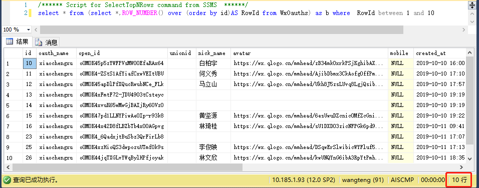
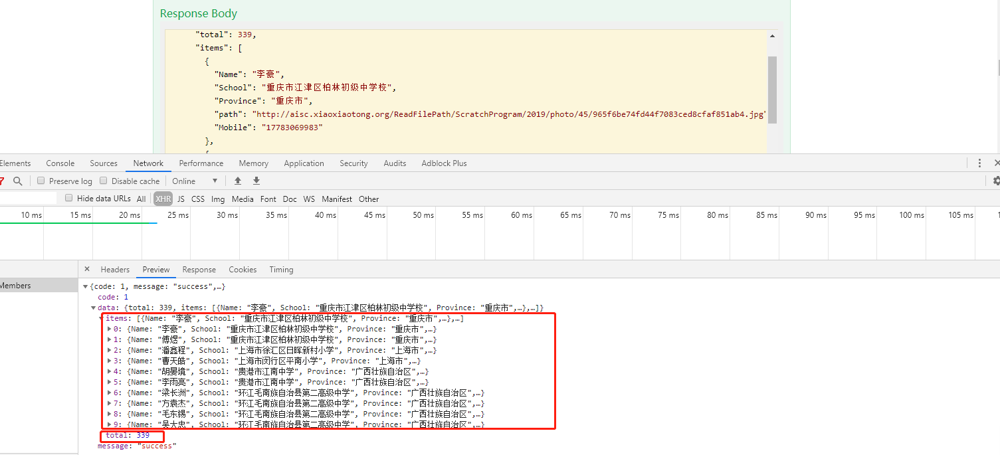
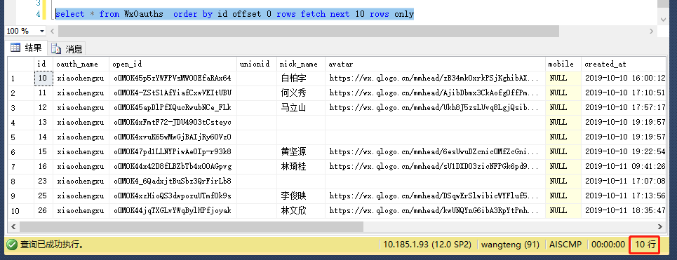

本来这篇想来聊聊单点登录的相关技术的，但今天突然来了点想法，想聊聊我们在开发中常遇到的一个问题，分页。
其实这个问题的解决方案也很成熟了，大家肯定也都接触过，而且我觉得大家再做到分页这部分的时候，基本都是沿用之前写好的逻辑，借这个机会，我来梳理一下分页的整体流程。
分页的本质其实是查询，我们系统一般使用的数据库都RDS，关于分页查询，每个RDS类型对应的SQL略有区分，这里我主要说一下sqlserver，然后捎带提一下mysql，oracle用的少，就不说了，不过查了下分页的逻辑和sqlserver差不多。
接下来我从数据库到系统的呈现，分层次来介绍下分页的实现方式，当然这只是我的思路，为了呈现效果，简化了许多内容。
第一步，写好分页查询的类
在这一步开始前，我想先说一下分页的sql，在sqlserver里，我看到的最多的分页的写法是这种
1 | --先来个实例 |
看下执行结果

那么我们看到这个例子里，可以提出来的部分，整理成类似公式的东西，然后根据公式，我们就可以写出一个通用的类，首先，从左往右，我们看到第一个我们自己定义的实参是id这个属性，就是需要排序的字段，我们需要这样一个参数，让rds帮助我们完成分页，那么这个id就可以定义成一个形参，再往后看到第二个实参是WxOauths，这是个表名，当然这里也可以是一个检索结果，所以这里使我们第二个设置形参的地方，再往后我们看到between的区间值，设定的也是固定的实参，所以这里分别是第三，四个形参，到这里，分页的sql原理我们差不多搞清了，可以去写代码了~
1 | public static string CreatePagingSql(int _pageSize, int _pageIndex, string _safeSql, string _orderField) |
这段代码非常简单，就是简单地把我们前面写的那个实例，拆分开，然后根据我们找到的四个需要传入实参的地方，用形参来拼接好，组成最终的查询语句。
在实际当中，我们往往还需要一个汇总的值total，来告诉前端总共的条数，我们还是看到上面那个实例，统计总数其实就是统计表或者查询结果的条数，也就是第二个形参，所以这段代码非常简单
1 | public static string CreateCountingSql(string _safeSql) |
结合上面的方法，我们写一个总的分页调用方法，得到分页结果和总条数；
1 | public DataSet GetPageList(int pageSize, int pageIndex, string strWhere, string filedOrder, out int recordCount, string selected) |
注意，这里用到的关键技术其实还是拼接，但是由于是sql，所以该方法的上层应该还有一个方法来处理sql条件，避免sql注入。因为是演示，这一步我就不写了，提供个思路吧，过滤sql条件的话其实有好多方法，一是我们引用反射和SqlParameter的类来对完成sql的赋值操作，这样可以很好的避免注入风险，缺点就是，时间复杂度比较高，我比较常用的方式是在参数传入的模型层，通过添加DataAnnotations命名空间，通过模型验证的方式完成参数的正确性验证，如果你用过诸如EntityFramework这样的orm框架，对这点应该很熟悉。
接下来我们到我们的实际业务层代码里去调用了
1 | public ActionResult GetList(int pageindex=1,int pagesize=10) |
至此，后端的分页处理流程就完成了，看下效果

到这里，我想多说两点，关于最开始我们提到的分页方法，到sqlserver2012以后，微软提供了一种新的分页方式，并且推荐sql2012以后的版本使用该方式来进行分页查询，目前我们最新的项目里，底层的分页写法都已经改成了这种，这里分享一下
1 | select * from WxOauths order by id offset 0 rows fetch next 10 rows only |

可以看到，新的方式在阅读方式上更加友好，其中offset是偏移量，fetch next是要取的条数，我们依然可以根据前面提到的方式，把需要的四个形参提取出来，整理成公式，这个我就不多说了。
再聊一下mysql的分页语法，额…本来想在这在举举例子，鉴于最近用的不多，分享个链接吧，里面有mysql的各种分页写法和效率对比，传送门:https://blog.csdn.net/bandaoyu/article/details/89844673
好了，如果你的项目是前后端分离的，完成上面的步骤，就可以了，呈现的部分，则交由前端的同事来完成，根据经验，这已经足够了。
那么如果我们是做的mvc或者需要自己来写分页页面的系统，我们需要自己来写前端的逻辑，我这里也分享下我的做法。
首先，我还不会用流行的mvvm框架，如vue、angular，所以我这里分享的还是传统的借助jQuery的形式来完成分页的方法，
1 | //获取列表 |
说明一下，chargeTpl是我封装的一个填充模板的方法，用到了layui里的模板组件，实际使用的时候，这里是根据逻辑来完成的，params是一个数组，个人觉得在传入多个参数的时候，已数组形式比罗列多个参数要好很多，起码参数顺序不用固定了。
如果是手机端，需要上拉或者下拉加载，那么我们还要有一个加载分页的方法
1 | function loadMore(params) { |
代码很简单，意思是有一个加载更多的区域，当我们滑动到底部或者顶部的时候，会触发loadMore事件，完成分页请求，当全部加载完成后，将绑定该事件的模块隐藏
至此，前端分页的核心逻辑就全部完成了。
在此，推荐一个前端框架，相信很多人都已经非常熟悉了，layui，无论是在GitHub还是Gitee上layui的star数量非常多，是非常受欢迎的前端集成开发框架，我目前多个B/S的项目几乎都或多或少的会用到里面的组件，非常方便，也很节约时间，再此强烈安利一下https://www.layui.com/doc/。
好了,这件小事儿，说完了，下篇再见~